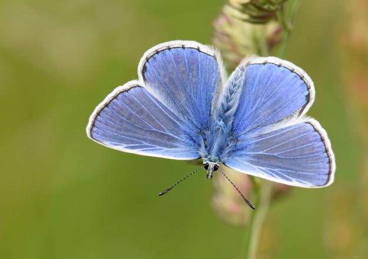
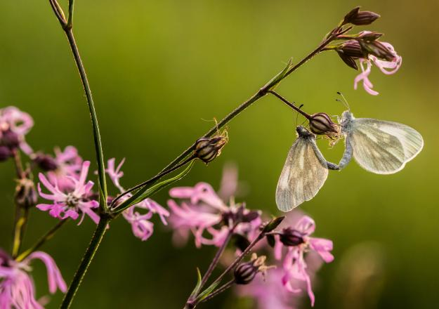

| Common Blue: | The Common Blue is the most widespread blue butterfly in Britain and Ireland and is found in a variety of grassy habitats. |  |
| Cryptic Wood White: | In the UK the Cryptic Wood White only occurs in Northern Ireland, but it is widespread there and in the Republic of Ireland. |  |
| Brimstone: | When this butterfly roosts among foliage, the angular shape and the strong veining of their wings closely resembles leaves. | |